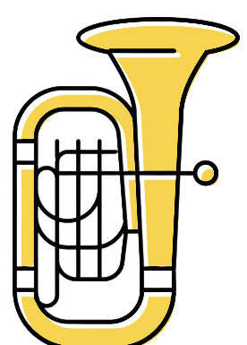

Experiência profissional

2017 - Atual
Instituto Federal do Ceará
Professor de Música: Regência e Sopros,
lotado no Campus Maranguape.
2009 - 2017
Faculdade de Música do Espírito Santo
Disciplinas: Tuba (I, II,III, IV)
Eufônio (II, II, III, IV) -
Curso de formação Musical Tuba (1-8)
Bacharelado em Música Concerto
Final/TCC (1-2)
2013 - 2016
Secretaria Estadual de Cultura de ES
Músico de nível superior - Tubista
Vínculo: Convidado
2007 - 2010
Prefeitura Municipal de Sarzedo
Atuou como professor/orientador da classe de
metais graves da Banda Municipal Sarzedense.